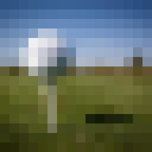
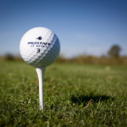

逆问题：从不完整观测恢复信息
面对模糊、缺损或低分辨率的图像，研究如何结合观测与扩散模型先验，得到更可靠的重建。围绕重建质量、计算效率和输出目标，形成了一条连续的研究主线。

退化观测恢复→

待恢复原始图像- NeurIPS
2024ProjDiff · 设计求解方法更充分地利用扩散模型的去噪能力，处理带噪观测下的重建。
- NeurIPS
2025LLE · 改善少步推理复用历史估计，在有限的采样步数下改善重建质量。
- ICML
2026MAP-RPS · 控制重建目标研究像素误差与感知质量的取舍，使重建结果能够按需求调节。